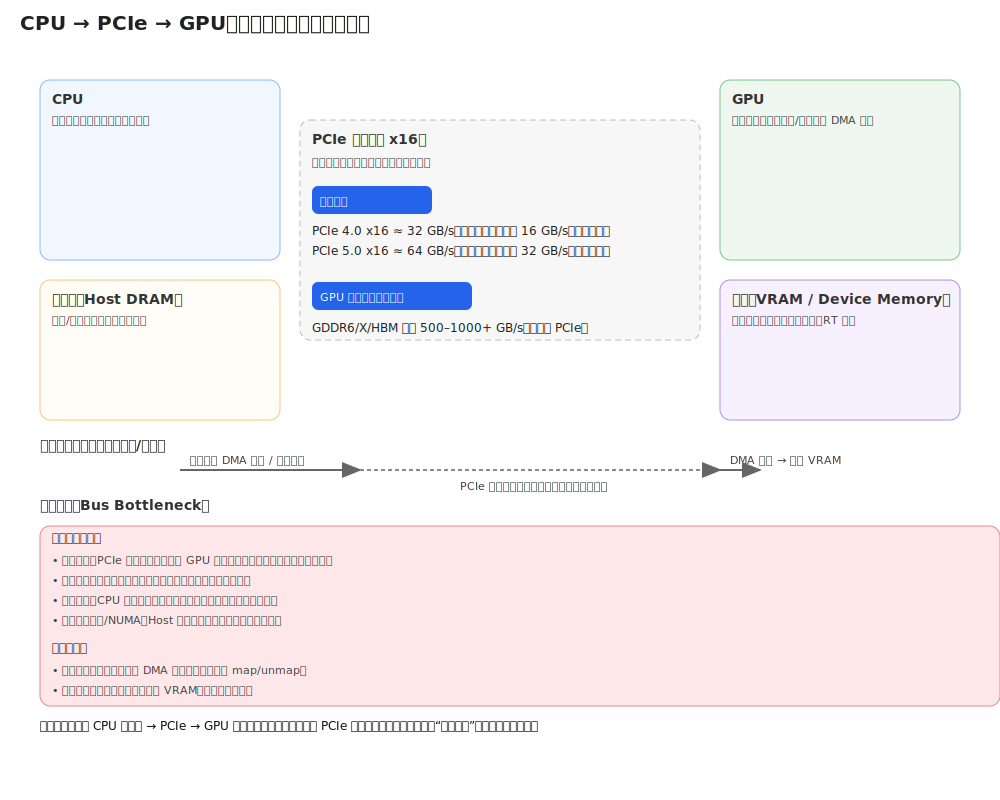

计算机图形学
第六章(1) 缓存
回到源代码
在屏幕上绘制一个三角形
// 1. 在 CPU 内存 (RAM) 中定义几何数据
const positions = [
0.0, 0.5, 0.0, // 顶点 1 (x, y, z)
-0.5, -0.5, 0.0, // 顶点 2
0.5, -0.5, 0.0 // 顶点 3
];
// 2. 数据如何传送到GPU？
// 3. 告诉 GPU 使用哪个着色器程序
gl.useProgram(myShaderProgram);
// 4. 告诉 GPU 执行绘制
gl.drawArrays(gl.TRIANGLES, 0, 3);
数据如何传送到GPU？
CPU与GPU的体系差异
CPU (Central Processing Unit): 专为低延迟 (Low Latency)优化，拥有少量复杂核心 (Complex Cores)、巨大的缓存 (Cache) 和强大的分支预测器，擅长处理复杂的、串行的逻辑任务
GPU (Graphics Processing Unit): 专为高吞吐量 (High Throughput)优化，拥有大量简单核心 (Simple Cores)，设计用于并行处理大量数据，适合图形渲染和并行计算任务
二者通过PCIe总线(Bus) 连接，而CPU访问系统内存(RAM)与GPU访问显存(VRAM)的速度，远快于跨总线访问的速度
如果CPU频繁、零散地往GPU传送数据，如gl.drawArrays()需访问的顶点数据，
解决方案：采用缓存对象(Buffer Object)，通过DMA(直接内存访问)机制，将海量数据一次性生成，异步从RAM批量传输到VRAM中，减少CPU与GPU之间的数据传输次数
数据传输瓶颈
“保留模式”传送数据
// 1. 在 CPU 端准备 *所有* 数据 (40MB!)
const allPositions = new Float32Array(10000 * 3 * 3);
fillWithData(allPositions); // CPU 在 RAM 中操作
// 2. [??] 一次性将 *全部* 数据批量发送到 GPU 的“专属内存”
const myBuffer = gl.createBuffer();
gl.bindBuffer(gl.ARRAY_BUFFER, myBuffer);
gl.bufferData(gl.ARRAY_BUFFER, allPositions, gl.STATIC_DRAW);
// 3. 告诉 GPU 如何解析这块内存
gl.vertexAttribPointer(...);
gl.enableVertexAttribArray(...);
// 4. 一次性告诉 GPU 绘制 *所有* 三角形
gl.drawArrays(gl.TRIANGLES, 0, 10000 * 3);
这个位于 VRAM 上的、由 GPU 管理的内存区域，就叫做缓存对象，它是CPU为GPU准备的“原材料仓库”，是克服总线瓶颈、实现高性能渲染的基石
学习目标
需要传输多少数据？
- 一幅大小为$128\times 128$的彩色图像，每通道以8bits表示，在内存中占多少字节？
- 要绘制一个立方体，需要提交多少个唯一的顶点坐标，又需要提交多少个顶点用于绘制？
- 能否减少提交的数据量？
缓存的概念
缓存对象是 在显存(VRAM)上一块由GPU驱动管理，用来存储顶点数据、纹理数据、渲染结果等数据的内存区域，是GPU专用，CPU无法访问缓存对象
不同的缓存对象有不同的作用，当今计算机图形学技术大量依赖各种缓存，通过应用程序与缓存进行交互实现各种效果
缓存对象有生命周期，其使用包括，创建缓存对象、使用缓存对象、销毁缓存对象，由API进行控制管理
- 创建缓存对象：glGenBuffers()，向GPU驱动申请一个或多个未使用的缓存对象，返回一个或多个对应的缓存对象ID，以整数标识
- 使用缓存对象：将数据写入缓存对象，并使用缓存对象进行数据读取
- 绑定缓存对象：glBindBuffer(target， id)，将缓存对象ID绑定到目标缓存对象，后续对目标缓存对象的操作，都作用于该缓存对象。由于OpenGL基于状态机进行操作，需要告诉GPU，接下来的操作是针对这个ID
- 用数据填充缓存对象：glBufferData(target， size， data， usage)，这是操作的关键步骤，将CPU内存RAM中的数据拷贝到当前target上绑定的缓存对象ID所指向的GPU显存VRAM中，写入数据，需指定缓存对象数据大小，数据，以及缓存对象使用方式，帮助驱动优化数据在内存中的放置
- 销毁缓存对象：glDeleteBuffers()，销毁缓存对象，释放VRAM资源
顶点缓存(Vertex Buffer Object, VBO)
目标(Target):GL_ARRAY_BUFFER
作用(Role): 存储逐顶点 (Per-Vertex) 的属性数据。这是 GPU 绘制几何体的基础“原材料”
内容(Content):顶点位置 (vec3), 顶点法线(vec3), 纹理坐标(vec2), 顶点颜色(vec4) 等
数据布局(Layout):通常采用交错 (Interleaved)布局以提高内存局部性(Data Locality)
索引缓存(Element/Indices Buffer Object, EBO/IBO)
目标(Target):GL_ELEMENT_ARRAY_BUFFER
作用(Role):不存储顶点数据，存储指向VBO的整数，用于顶点索引，指定顶点缓存中的顶点如何组成几何体
内容(Content):无符号整数 (uint16 / uint32) 的数组，每个整数索引对应顶点缓存中的一个顶点
优势：顶点重用
顶点缓存(VBO)(4顶点)
索引缓存(EBO)(2三角形)
索引缓存(EBO)与顶点缓存(VBO)一起使用，GPU根据索引缓存中的索引，从顶点缓存中获取顶点数据，进行绘制
如果绘制一个四边形，只需传输4个顶点的数据和6个整数索引，而不是6个完整的顶点数据。对于复杂模型，这将极大地减少内存占用和总线带宽
统一缓存(Uniform Buffer Object, UBO)
目标(Target):GL_UNIFORM_BUFFER
作用(Role):存储在多次绘制调用甚至多个着色器程序(Shaders)之间共享、不变的属性数据，即“全局变量”
内容(Content):模型矩阵，视图矩阵，投影矩阵，光照参数(位置、颜色)，纹理参数等
优势：一次设置，多次使用。当相机移动时，CPU只需更新一次UBO，所有使用该UBO的着色器程序，如处理角色、场景、天空的Shader，都会自动获取到新的矩阵，而无需通过CPU让每个程序都调用glUniformMatrix4fv获取矩阵

UBO 通过“绑定点”被多个着色器共享
纹理对象(Texture Object)
纹理对象，是一种特殊的VRAM资源，在概念上类似于缓存，并针对图像数据专门做了优化
存储(Storage)：图像数据被“拍平”成一维线性数组，按行(Row-Major Order)进行存储
一幅$2\times 2$的RGBA图像存储为：
处理(Processing)：GPU有固定功能的硬件纹理采样单元(Texture Sampling Units)，根据$(u,v)$纹理坐标，对这块线性内存执行寻址采样，并进行过滤(Filtering)和环绕(Wrapping)处理，速度很快
帧缓存(Frame Buffer Object, FBO)
定义(Definition)：GL_FRAMEBUFFER，是一个容器，聚合了一组渲染目标(Render Targets)，是GPU渲染管线的输出目的地
- 默认情况下，渲染目的地是默认帧缓存，即窗口/屏幕
- 通过创建处定义FBO，可以将渲染结果重定向到离屏(Off-screen)纹理
作用(Role):存储渲染结果，即图像数据
内容(Content):FBO本身不存储数据，只是指向其他VRAM资源的“附件”，包括：
GL_COLOR_ATACHMENT0：一个纹理对象，用于接收面片着色器输出的颜色GL_DEPTH_ATTACHMENT：深度缓存，用于接收深度测试结果GL_STENCIL_ATTACHMENT：模板缓存，用于接收模板测试结果
用处：可以离屏渲染到缓存，实现后处理(Post-Processing)效果，如模糊、边缘检测、阴影贴图、光照、反射等

深度缓存(Depth Buffer)
定义(Definition)：GL_DEPTH_BUFFER，b也称“Z-Buffer”，是一块与颜色缓存同样大小的VRAM区域，用于存储每个面片(像素)的深度信息(Z-value)，一般为24-bit或32-bit浮点数
作用(Role)：用于深度测试(Depth Testing)，即判断当前面片与已有的像素的深度信息，并决定是否进行渲染，在管线的“输出合并”（Output Merge）阶段，GPU执行的操作为：
if (new_fragment.Z < depth_buffer[x, y]) {
// 新片元更近
color_buffer[x, y] = new_fragment.Color; // 写入颜色
depth_buffer[x, y] = new_fragment.Z; // 更新深度
} else {
// 新片元被遮挡
discard; // 丢弃该片元
}
用途(Usage)：深度缓存是隐式的，不需要用户显式创建，只需要调用glEnable(GL_DEPTH_TEST)即可启用，用于自动计算隐藏面消除(Hidden Surface Removal)，确保不透明物体无论CPU提交绘制顺序如何，都能按正确的远近顺序进行遮挡，绘制正确的结果
模板缓存(Stencil Buffer)
定义(Definition)：GL_STENCIL_BUFFER，用于存储每个面片的模板信息，一般为8-bit无符号整数
作用(Role)：用于模板测试(Stencil Testing)，即允许基于自定义规则，比较当前面片与已有的像素的模板信息，并决定是否对面片进行渲染，类似一个可编程的“遮罩”（mask）。模板测试在管线的“输出合并”（Output Merge）阶段，在深度测试前或后均可执行。GPU执行的操作为：
- (Pass 1)，写入：渲染一个物体（如地板），并配置GPU将特定值定稿模板缓存中该物体覆盖的区域
- (Pass 2)，读取：渲染另一个物体（如人），并配置GPU仅渲染模板缓存中为特定值的区域
用途(Usage)：模板缓存是隐式的，不需要用户显式创建，只需要调用glEnable(GL_STENCIL_TEST)即可启用，用于实现高级遮挡效果，如物体描边、平面反射、阴影体积、遮罩效果等
管线如何“使用”缓存
数据已在显存(VRAM)中，当GPU收到glDraw...的命令后开始工作
- 输入装配器(Input Assembler)：
- 从EBO(索引缓存)读取绑定的数据
- 根据EBO中的索引数据，去VBO(顶点缓存)中获取对应的顶点数据
- 将顶点数据打包成图元(如三角形)
- 顶点着色器(Geometry Shader)：
- 输入VBO中的顶点属性
- 读取UBO中存储的矩阵数据，如model, view, projection
- 执行变换，有gl_Position=P*V*M*vPos
- 光栅化(Rasterizer)：
- 面片着色器(Fragment Shader)：
- 读取UBO中的数据，如光源属性、相机位置等
- 获取纹理对象中的像素数据
- 进行光照计算，得到最终颜色
- 输出合并(Output Merge)：
- 将片元数据写入颜色缓存(Color Buffer)
- 将片元数据写入深度缓存(Depth Buffer)
- 将片元数据写入模板缓存(Stencil Buffer)
- 进行各种后期处理，将片元数据写入帧缓存(Frame Buffer)
管线如何“使用”缓存
题目一（问答题）
glBindBuffer()的作用是什么？为什么它在 glBufferData()之前被调用？
答案解析:glBindBuffer()将一个缓存ID设置为某个目标(Target)上的“当前活动缓存”。因为OpenGL是一个状态机，glBufferData会作用于当前绑定的缓存
题目二 (问答题)
要绘制一个由 8 个唯一顶点构成的立方体，最高效的缓存组合是什么？
答案解析: 一个 VBO (顶点缓存) 存储8个顶点的数据；一个EBO(索引缓存) 存储36个索引(12个三角形*3)
题目三 (问答题)
视图矩阵应该存储在哪种缓存对象中？为什么？
答案解析: UBO (统一缓存)。因为视图矩阵是“全局”数据，管线中的所有顶点着色器都需要读取它，且通常在每帧中保持不变。
题目四 (问答题)
要实现后期处理，如全屏模糊，渲染管线的“输出目的地”应该选择什么？
答案解析:一个自定义的帧缓存对象(FBO)，它将场景渲染到一个离屏纹理上，而不是默认的帧缓存(屏幕)
课堂总结
- 缓存对象(Buffer Object): 为克服 总线瓶颈 而设计的 VRAM 内存块，通过 DMA 批量填充
- 生命周期:
Gen(创建ID) ➔Bind(设为活动) ➔BufferData(传输数据) - VBO (顶点缓存): 存储“逐顶点”属性 (位置, UV, 法线)
- EBO (索引缓存): 存储“整数索引”，实现 顶点重用，极大优化性能
- UBO (统一缓存): GUP 存储“全局共享”数据 (矩阵, 光源)
- FBO (帧缓存): 渲染到“离屏”目标的容器，是后期处理的关键
- Depth/Stencil: 逐面片执行“测试与丢弃”的专用缓存，用于遮挡和特效